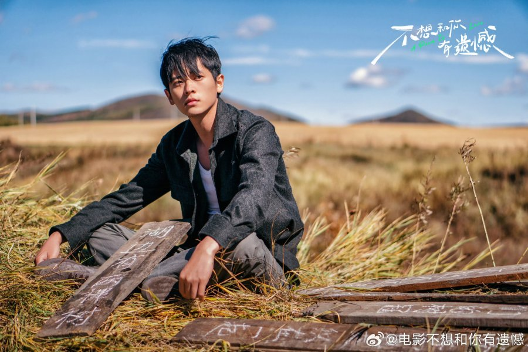
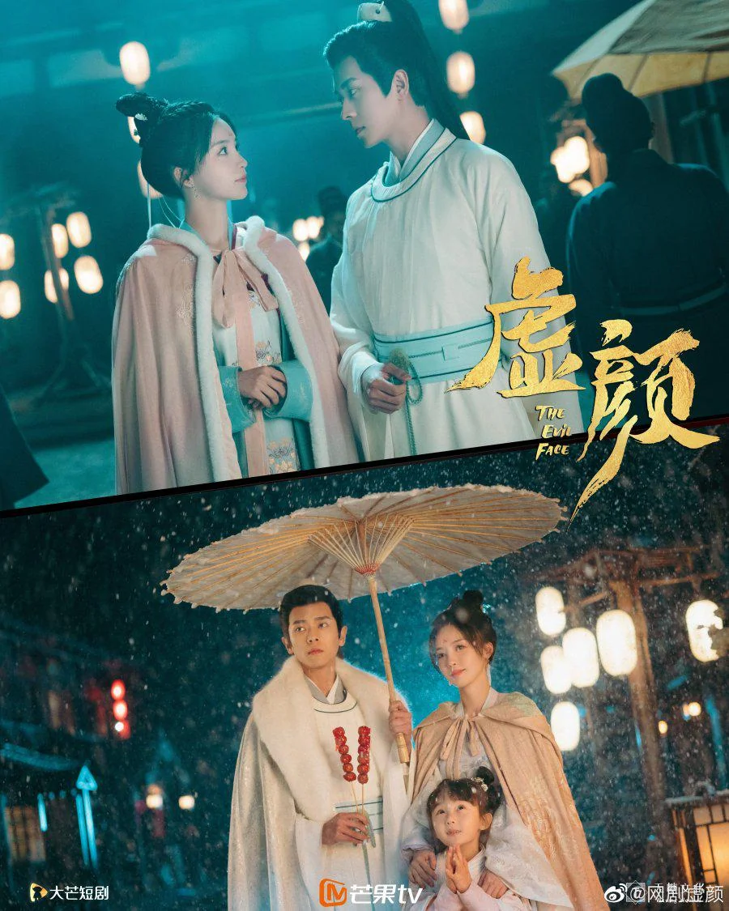
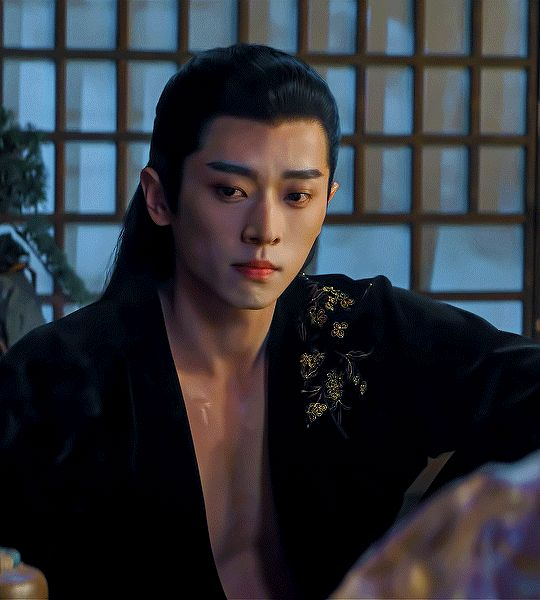
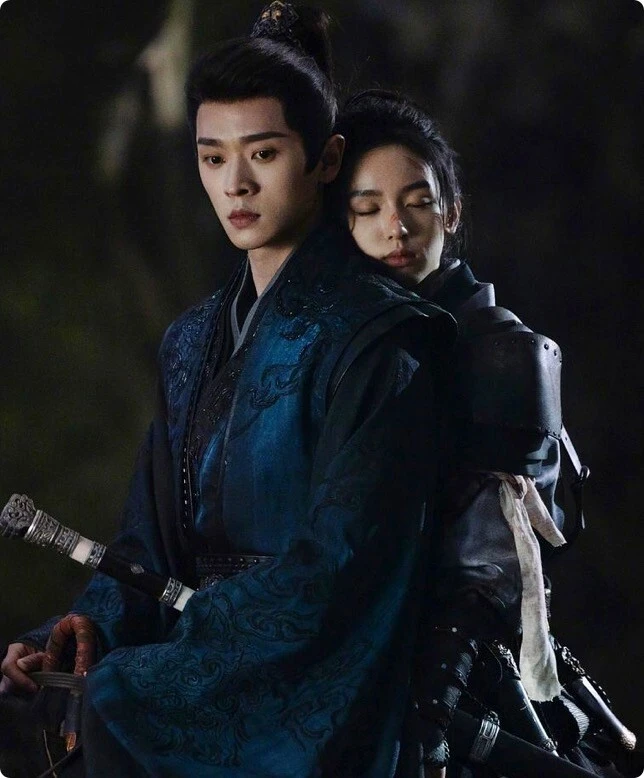
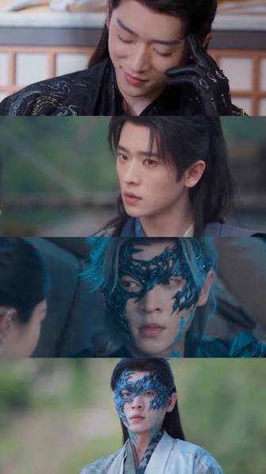
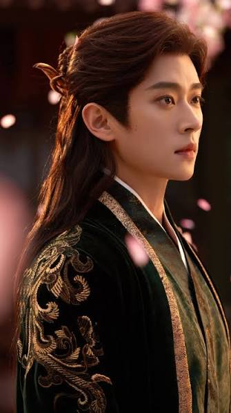

Vem är Cheng Lei?
 Cheng Lei, bild från https://ww19.myasiantv.es/cast/cheng-lei/
Cheng Lei, bild från https://ww19.myasiantv.es/cast/cheng-lei/
Cheng Lei (程磊) är en kinesisk skådespelare som är verksam inom kinesisk tv-drama och film.
Från konststudent till en av de mest uppmärksammade skådespelarna inom kinesiska kostymdramer.
Snabbfakta
Visa snabbfakta om Cheng Lei
- Född: 18 december 1993
- Födelseort: Dongguan, Guangdong, Kina
- Utbildning: Hebei Academy of Fine Arts
- Yrke: skådespelare
- Land: Kina
- Språk i produktioner: mandarin
- Vanliga genrer: historiskt drama, wuxia, romantik, modernt drama
Läs mer om Cheng Lei på Reddit
Biografi
Konstnären som fann skådespeleriet  |
Utanför kameran
Cheng Lei har berättat om sitt intresse för konst, litteratur och fysisk träning. Intressena fungerar både som inspiration och som ett sätt att finna balans.
- Konst & design
- Litteratur
- Parkour
- Ridning
- Träning
- Musik
Med egna ord
|
Utvalda roller
Karaktärer som lämnar avtryck.
Year: 2022 
Year: 2023 
Year: 2025 
Year: 2025 
Year: 2026  |